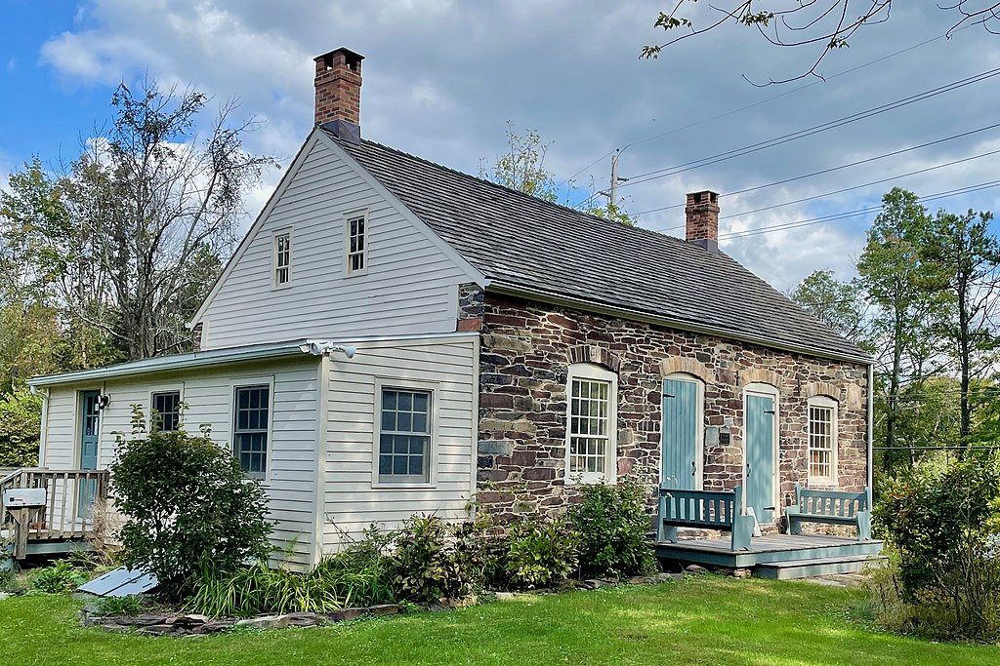

PHOTO ALBUM, GULICK LINE

Major General John W. Gulick, USA (1873-1939)
Paternal cousin and descendant of 9th great-grandfather Hendrick Van GULICK who moved to America from Holland 1653.
His father was Lt James W. Gulick Co H 2nd NC Inf CSA, Confederate officer of Goldsboro NC, b. NJ.
Some surprising family resemblance to Professor Henry C. Gulick (father).
Fort Gulick in Panama Canal Zone was named after Major General John W. Gulick.
Mutual Descent from Jochem (ca 1645-1723, Captain of Militia Gravesend Long Island 1705) and (Jacomyntie Van Pelt dau of Teunis Van Pelt 1622-99 Dutch
Patroon of Van Pelt Manor, New Utrecht, Kings
Co, Long Island, NY) Gulick...
Gulicks owned slaves (4th g gfather ancestor Cornelius
Gulick (1767-1837, baptized Harlingen Dutch Reformed Church), "Corns." Gulick age 60-70, 5 blacks (2 slaves & 3 free colored) 1830 Census p. 42 Franklin Twp Somerset Co NJ just NE of Princeton)
in America in the 19th century in NJ & northern Virginia (e.g., 1860 Southern District Loudoun Co & Fauquier Co). 33 Gulick Confederate soldiers listed Civil War
Soldiers NPS site, especially from Virginia. Some officers, plus 4 soldiers in Mosby's Cavalry. Great grandfather Henry F. Gulick was 19th century Democrat...
American Revolution ancestor paternal 5th g gfather Capt John Petty (1730-1791), Sussex Co New Jersey Militia.
3rd g gfather Henry J. Gulick (1789-1861), War of 1812 • Somerset County, New Jersey Militia.
Captain Jan Teunissen Van Pelt (1645-1734)
Half brother of 8th g gmother Jacomyntie Van Pelt Gulick. Captain of Foot 1691, Richmond Co NY (Staten Island) & Member of the Assembly Richmond Co & of the
Council for Indians. Witnessed the baptism of Pieter Gulick, son of ancestors Capt Jochem Gulick and [Jacomyntie Van Pelt] Teunise, on 22 Sept 1689 at Old 1st Dutch Reformed Church,
Breuckelen (Brooklyn), Kings Co, Long Island, NY... Capt Jochem Gulick approximate location 1693: 2138 McDonald Ave, Brooklyn, NY 11223 (N of Gravesend Long
Island)... From Early Settlers & Indian Fighters of Southwest Texas
By Andrew Jackson Sowell: direct paternal descendant of this Capt Jan Teunissen Van Pelt was
Captain Malcolm VAN PELT (b. 1831 Charlotte NC d. 1910 Concan, Uvalde Co TX),
Texas Indian fighter. Common ancestor Teunis Jansen Laenen "Anthonius Laenen" Van Pelt (ca 1622-1699): Tree.

Luther Halsey Gulick Jr
Paternal cousin and descendant of Hendrick Van Gulick who moved to America from Holland 1653.
He helped invent the game of basketball and organize the Campfire Girls.
Born Hawaii into the Gulick family of missionaries.
John McCorkle & Thomas B Harris, Quantrills' Men CSA
Lexington Missouri fall 1864, representing paternal great grandmother Josephine GARNER Gulick. See below.
Her father was a Confederate soldier from Bath Co KY ("he fought on horseback locally, was shot in leg..."), Isaac D. GARNER (1831 -
d. Warrensburg MO 1921, his uncle Isaac B. Garner, 1850 Wyoming Bath Co KY, 2 slaves).
2 of his wife's (Eliz NESTOR Garner) brothers were Confederate regulars from Bath County: Felix Nestor was with
Confederate General John Hunt Morgan KY Cavalry (2nd Battalion Mounted Rifles KY Volunteers CSA) & "killed in battle, June 1864" on Morgan's
last Kentucky raid (Mt Sterling, Lexington, CYNTHIANA, Hazel Green), abt. age 18 or 19 (?actually,
may have survived (d. 1912 Nodaway Co MO) the war & moved north 1864 with brother Joshua (d. 1929 Sumner Co KS)).
Joshua Nestor was with Co H 5th KY Inf CSA of the Kentucky "Orphan Brigade"... History of Kansas under Henry F. Gulick says Isaac Garner was Confederate soldier. It sounds like he may have
been a Confederate Partisan guerilla or maybe in the 2nd Battalion Mounted Rifles KY Volunteers CSA... Isaac GARNER 1910 Census Hazel Hill Twp, Johnson Co, Missouri,
"Veteran of Confederate Army".
Additional DNA MATCH cousin (1st cousin 4x removed =
1st cousin of 2nd g gmother Eliz Nestor Garner) John G. Nester, Co I 63rd
VA CSA (Battles Chickamauga to Atlanta, TN...) from SE of Hillsville Virginia... Also 1st cousins of gg gmother Eliz Nestor Garner from E of Hillsville VA:
Aaron Grissom Nester Sr, Co G 54th Regmt CSA (Chickamauga to Atlanta, TN, NC...) & Franklin W. Nester Co E 30th Battalion Virginia Sharpshooters CSA (Shenandoah Valley,
Cold Harbor...).
Paternal grandmother of Isaac D. GARNER (2nd ggfather d. 1921) Abigail CORN (b. 1765 Henry Co VA d. 1852 Bath Co KY) had 4
brothers, patriots
in American Revolution, sons of Matthew P. Corn (DNA Match, d. 1808 Henry Co VA): Ensign Jesse CORN ... George CORN who was with Genl George Rogers Clark expedition June 1780 Kentucky,
wounded at Battle of Blue Licks 1782 KY, Long Run Massacre aftermath Jefferson Co KY 14 Sept 1781 & other Indian fights (see pension app of son Timothy)... Matthew CORN (d. 1808 Henry Co VA) had descendants serving as Confederate soldiers, including 3
ggsons NC CSA... Son of Ensign Jesse CORN, Samuel W. CORN (1792-1854), 6 slaves 1850 Ft Osage, Jackson Co Missouri... Son of Samuel W. CORN, 2nd cousin 4x removed
Joshua CORN (1821-1881, 2 slaves 1860 Ft Osage MO), m. Adaline Dalton (b. KY 1829 buried CORN Cem Sni Mills, Jackson Co MO 1855) who
was the paternal aunt (sister of their father James Lewis Dalton who married Adeline Lee Younger: through her brother, Adeline
Younger was an aunt of Cole & Jim Younger, of the famous James-Younger Gang) of the Old West
outlaws "the Dalton GANG"...
Nancy Eliz Harris (dau of Jeremiah) CORN m. 3rd cousin 3x removed Thomas J CORN (1840-1921, MO State Guard Confederate of E Jackson Co MO, gson of Samuel W.
CORN d. 1854). Her paternal (Wm McAlexander Harris d. 1847) grandfathers' brother Reuben Marshall Harris m. Lavina Fristoe, sister of Bersheba Fristoe, mother of outlaw Cole
Younger... Children of Reuben Marshall Harris & Lavina Fristoe: Thomas B Harris (photo above), close friend of John McCorkle (photo) author of
"Three Years With Quantrill" quote - "... Frank James [brother of Jesse James], Captain Scott & Tom Harris came to where we were...", went to Kentucky with
Quantrill 1865; Nancy Eliz "Nannie" Harris McCorkle m. Jabez McCorkle brother of John, member of Sisterhood of Spies injured Union Prison
Collapse Kansas City Aug 13 1863 with sisters of Bloody Bill Anderson, precipitating the Lawrence Raid by Quantrill August 21, 1863...
Parents of Nancy Eliz Harris CORN (m. cousin Thomas J CORN), Eliz Lane Gibson Harris & stepfather Charles Claiborne Webb, buried Slaughter
Cem NE of Blue Springs MO. Same cemetery as parents of Kate King Quantrill (m. Col William Clarke Quantrill CSA)... Brother of Thomas J
CORN, John Henry Corn d. 1930, m. Rhoda Harris dau of Fleming, brother of Jeremiah.

Seven children of Peter Johnson Gulick
Paternal cousins and descendants of Hendrick Van Gulick who moved to America from Holland 1653.
The Gulick family of Hawaiian missionary Reverends.
Bill Gulick, Western Writer
Paternal uncle, born 1916 Kansas City MO. One of the 1st presidents of the Western Writers of America,
1950's. Son of grandfather Dr. (DVM) G.C. Gulick (b. 1889 Ness Co Kansas, buried 1964 Oklahoma City OK). Wrote stories which formed basis of movies
"Bend of the River" with Jimmy Stewart, "Hallelujah Trail" with Burt Lancaster & "The Road to Denver" (1955)... Studied creative writing with Western author Stanley Vestal & Foster Harris, Univ of
OK at Norman. "A list of his literary friends reads like a Who's Who of Western Writing: Elmer Kelton, A. B. Guthrie, Max Evans, ... & his mentor,
Walter Stanley Vestal Campbell."

Dirck Gulick House, N of Princeton NJ
House built 1752 by direct paternal ancestor, 6th g grandfather Dirck Gulick (1702-1787, Deacon of Harlingen Dutch Reformed Church), in epicenter area of colonial Dutch Gulicks in America. Dirck
Gulick & his partner Hendrick Vanderbilt (Hendrick Jacobsen Vanderbilt, ca 1705-aft 1762; related to tycoon Cornelius Vanderbilt (1794-1877); common ancestor Jan
Aertsen Vanderbilt, ca 1620-1705) purchased 1,710 acres of land 1727 as speculation, on a part of which the house
was built... House now occupied by Van Harlingen Historical Society.

Thomas Hampton Hall Sod House, 1888 Western Kansas
Paternal gg grandfather Thomas H. HALL family, probably ?Lane County. Grandmother Golda Hall Gulick is baby with her mother Emily Coppock Hall... Halls were Quakers in colonial
Pennsylvania, moved ?near Strasburg Shenandoah Co Virginia 1779. Probable descent from 5th g gmother Sarah NANNEY on Hall line, descended from a humbler branch of
the noble Welsh family of Nannau, Dolgelly, Wales.
Early Welsh Quaker leader Rowland Ellis (ca 1650-1731) was distant cousin, Nanney his direct paternal ancestor... 1900 Census Galena Twp, Woods County,
Oklahoma Territory (Cherokee Strip): paternal great grandfather James Henry Hall (d. 1931)... Gulicks moved NW Oklahoma City OK 1929 from Hutchinson Kansas where grandfather [Dr]
Grover C Gulick [DVM] named in 1925 census as self employed Veterinary Surgeon...
Grandmother Golda Hall Gulick was adopted Ness Co KS ca 1894 by Lon Webster: adoptive father Alonzo Webster & wife formerly of Owen Co KY, son of Daniel Singleton
Webster Jr (b. 1833 Grant Co KY), was descended from Moses Webster. Probably cousin
to Capt Moses N Webster CSA (b. 1834 d. 1927 Pewee Valley
Confederate Home) of Grant Co & Co C 5th Reg KY Mtd Inf CSA, Confederate guerrilla of Kentucky. ?Common ancestor Daniel Webster b. 1750 m. Vardimon.
Maternal great grandmother of ggfather James Henry HALL (d. 1931) was Elizabeth Ann Catherine SWEARINGEN (b. 1772 MD d. 1815 VA, m.
George Bishop). She was 2nd
cousin to Major Thomas SWEARINGEN IV & his brother Lt Benoni SWEARINGEN (common ancestor Thomas SWEARINGEN b. 1665 m. Jane). They
accompanied Daniel Boone to Boonesborough Kentucky the fall of 1779, after which Boone established Boone Station. The SWEARINGENS,
along with ?kinsman Berue SWEARINGEN, are on the list of Boonesborough settlers. Also brother Captain Van "Indian" Swearingen, Am Rev.
Their father Col Thomas SWEARINGEN (d. 1760) defeated George Washington for Frederick Co VA Burgess 1756. 1755 George Washington & General
Braddock crossed the Potomac at SWEARINGENs' Ferry, Sheperdstown WV, enroute
to Braddock's Defeat. Bellevue Mansion built by SWEARINGENs 1773 Sheperdstown WV... Capt Van "Indian" SWEARINGEN (1742-93) was probably? the father
of illegitimate daughter ca 1783 of Eliz "Betty" Zane (1765-1823), pioneer heroine of Ft Henry 1782. Betty Zane's great-grandnephew, author Zane Grey,
wrote a historical novel about her 1903, titled Betty Zane... 4th great-grandmother Elizabeth Ann Catherine SWEARINGEN was also
cousin to Al SWEARINGEN, notorious proprietor of the Gem Theater Deadwood, SD 1876-99...

Aaron Grissom Nester Sr (1826-1908)
1st cousin of paternal 2nd great grandmother Elizabeth NESTOR GARNER. He was a Confederate soldier of Co G 54th VA CSA (Chickamauga to Atlanta, TN, NC...)
& was from the epicenter of Nesters, east of Hillsville, Carroll Co Virginia. Most of the Nesters stayed in this area, while a few including 3rd great grandfather
Andrew Nestor (1800-1875), moved to Kentucky & further west to Missouri & Kansas... On NESTOR line, 2nd cousin 4x removed Hiberd Powell (b. 1839
Estill Co KY d. 1916 SE of Stanton on S Fork of Red River, Powell Co KY), Co A 2nd Battalion
Kentucky Mounted Rifles CSA: wife Eliz Crabtree Powell had great uncle Isaac Crabtree (1757-1849, "hailed from a family of noted longhunters"),
who escaped Indian massacre that killed James BOONE, son of frontiersman Daniel, October 10 1773 in SW Virginia...
John Thomas Gulick CSA (b. 1845 Aldie, Loudoun Co Virginia d. 1923 Tulsa OK)
(Cousin, common ancestor Hendrick (b. 1678) son of 8th g gfather Capt Jochem & Van Pelt Gulick) 2nd Corporal John Thomas Gulick, 43rd Cavalry Virginia Battalion CSA,
"brave as the bravest": Enl. 6-10-63 for the war by [Col "Gray Ghost"] John S. Mosby at Rector's X-Roads, Fauquier Co. Prom. to 2nd Cpl.,
Co. A. WIA (severely) 1-1-64 in fight at Five Points in Fauquier Co. Present on June - Dec. 1863 muster roll. Capt. 2-16-65 in Loudoun Co.
Sent 2-18-65 to Old Capitol Prison. Trans. 3-2-65 to Ft. Warren. Took oath 6-15-65 at Ft. Warren. 5'-9 1/2", light complexion, light hair,
grey eyes. Res. Loudoun Co... 1900 - Randolph Co, Missouri... Father James H. Gulick 4 slaves 1840 Goose Cr southern
Loudoun Co VA.
Another cousin, George Milton GULICK of Co A 43rd VA Cav Btn CSA Mosbys' Rangers (son of Francis GULICK of Aldie, Loudoun Co Virginia, 5
slaves 1860), was killed in action Oct 29 1864 at Dulanys' farm SE of Upperville VA with Mosbys' Rangers age 19.
Governor John Sevier (b. 1745 Rockingham Co VA d. 1815 Alabama Territory buried Knox Co Courthouse Knoxville, TN)
1st cousin 6x removed. A founding father of the State of Tennessee. His
mother was Joanna GOAD, sister of 5th ggfather Abraham GOAD (DNA Match, b. 1740 Virginia d. 1816 S of Huntsville, Scott (then Anderson) Co TN), great
grandfather of Eliz NESTOR (d. 1919 Warrensburg MO; m. Isaac GARNER b. 1831 Bath Co KY)... Brother of Abraham GOAD (d. 1816), John GOAD, had daughter Agnes
GOAD Adkins. She, her husband, & 2 of her children scalped & killed by Indians 1790 W of Kingsport TN ?Clinch River valley... Confederate vet grandsons of
Abraham GOAD (d. 1816), sons of Robert GOAD (d. ca 1865 Maury Co TN): Coleman GOAD, 9th Battn TN Cavalry CSA (1 slave 1850 McNairy Co, TN); James Reison GOAD, 3rd TN Inf CSA; Lt Robert GOAD,
22nd Texas Inf CSA...